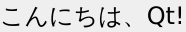
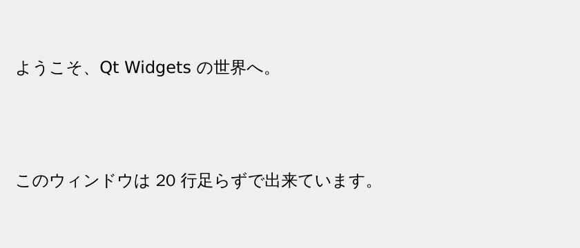

第 2 章·読了目安 10 分
第2章 最初のウィンドウ — イベントループを理解する
たった 6 行のコードを題材に、Qt アプリが動き続ける仕組み「イベントループ」を最初に押さえます。ここが分かると後が全部楽になります。
Qt のプログラムは、どんなに大きくなっても骨格は同じです。 ①アプリを作る → ②画面を出す → ③イベントループに入る。 まずはこの 3 つだけのプログラムを見てみましょう。
6 行でウィンドウを出す
"""最初のウィンドウ — Qt アプリに絶対必要な 3 つの要素だけを書いたもの。実行: python ch02_hello.py"""import sysfrom PySide6.QtWidgets import QApplication, QLabel# ① アプリケーション本体。Qt の世界にひとつだけ存在する「司令塔」。app = QApplication(sys.argv)# ② 画面に置くもの（ウィジェット）。親を持たないウィジェットは# それ自体が独立したウィンドウになる。label = QLabel("こんにちは、Qt!")label.show()# ③ イベントループ。ここでプログラムは「待ち」に入り、# ユーザーの操作を待ち受け続ける。閉じられると exec() が返る。sys.exit(app.exec())python ch02_hello.py
素っ気ない見た目ですが、これは立派なウィンドウです。 ドラッグして動かせますし、閉じればプログラムも終わります。
① QApplication — アプリの司令塔
app = QApplication(sys.argv)Qt のアプリには、必ずこれが 1 つだけ必要です。 画面の設定を管理したり、OS からの入力を受け取ったりする、いわば本体です。 どのウィジェットよりも先に作らなければいけません。
「ウィジェットより先に QApplication を作れ」という意味です。
QApplication(sys.argv) の行が、
ウィジェットを作る行より後ろに書かれていないか確認してください。
② ウィジェット — 画面に置くもの
label = QLabel("こんにちは、Qt!")label.show()Qt では、画面に出るものはすべてウィジェットと呼ばれます。 ボタンも、入力欄も、ウィンドウそのものも、全部ウィジェットです。
ここで大事なルールがひとつ。
親を持たないウィジェットは、それ自体がひとつのウィンドウになります。
上のコードで QLabel がウィンドウとして出たのはそのためです。
親子関係の話は第 7 章でくわしく扱います。
そして show() を呼ばないと、作っただけでは画面に出ません。これも忘れがちな点です。
③ app.exec() — イベントループ
sys.exit(app.exec())ここがいちばん重要です。この行に到達すると、プログラムは止まったまま待ち続けます。 何を待っているかというと、ユーザーの操作です。
イベントループという考え方
ふつうの Python スクリプトは、上から下まで実行したら終わります。 GUI アプリはそれでは困ります。ユーザーが操作するまで、終わらずに待っていてほしいからです。
そのための仕掛けがイベントループです。 「操作が起きるのを待つ → 起きたら対応する担当者に渡す → また待つ」を、 アプリが終わるまでひたすら繰り返します。
app.exec() はアプリの終了コード（正常なら 0）を返します。
それを sys.exit() に渡すことで、
シェルやタスクランナーに「正常に終わったか」を正しく伝えられます。
単に app.exec() と書いても動きますが、包んでおくのが作法です。
app.exec_() は、動くけれど使わない
Python 2 の時代、exec は予約語だったため、
PyQt / PySide では末尾にアンダースコアを付けた exec_() が使われていました。
PySide6 では exec_() も今のところ動きます。
ただし実行すると、次の警告が出ます。
DeprecationWarning: 'exec_' will be removed in the future. Use 'exec' instead.
つまり「エラーにはならないが、いずれ消える書き方」です。
正しいのは exec() のほう。
Web 上のサンプルで exec_() を見かけたら、
それは Qt5 以前に書かれた記事だという目印として使えます。
その記事の他の部分も古い可能性が高い、と身構えてください。
ウィンドウらしくする
タイトルもサイズもないと使いものになりません。中身も並べてみましょう。
"""ウィンドウらしいウィンドウを作る — タイトル・サイズ・中身を持たせる。実行: python ch02_window.py"""import sysfrom PySide6.QtWidgets import QApplication, QLabel, QVBoxLayout, QWidgetapp = QApplication(sys.argv)# 「入れ物」となるウィジェット。これがウィンドウ本体になる。window = QWidget()window.setWindowTitle("はじめての Qt ウィンドウ")window.resize(420, 180)# 中身を縦に並べるためのレイアウト。# QVBoxLayout(window) のように親を渡すと、その場で window に適用される。layout = QVBoxLayout(window)layout.addWidget(QLabel("ようこそ、Qt Widgets の世界へ。"))layout.addWidget(QLabel("このウィンドウは 20 行足らずで出来ています。"))window.show()sys.exit(app.exec())
新しく出てきたのは 3 つです。
| 書き方 | 意味 |
|---|---|
setWindowTitle("…") | タイトルバーに出る文字 |
resize(幅, 高さ) | 最初に表示されるときの大きさ（ピクセル） |
QVBoxLayout(window) | 中身を縦に並べる係。第 4 章の主題 |
resize() は「最初の大きさ」を決めるだけで、ユーザーは後から変えられます。
変えさせたくないときは setFixedSize(幅, 高さ) を使います。
ただし固定サイズは、文字を大きくしている環境などで中身がはみ出す原因になるので、
よほどの理由がなければ resize() にしておくのが安全です。
スクリーンショットの見た目について
Qt Widgets の見た目は OS ごとに変わります。 この教材のスクリーンショットは、どの章でも同じ見た目になるように Fusion という Qt 共通のスタイルで撮影しています。 あなたの Windows / macOS では、ボタンの角の丸みや配色が違って見えるはずですが、 構造とコードはまったく同じです。心配しないでください。 見た目を意図的に揃える方法は第 11 章で扱います。
ch02_window.pyのresize()の数字を変えて、起動時の大きさが変わることを確かめる。layout.addWidget(QLabel("3 行目"))を足して、行が増えることを確かめる。sys.exit(app.exec())の行をコメントアウトして実行してみる。ウィンドウが一瞬も出ずに終わるはずです。これがイベントループの正体です。
この章のまとめ
- Qt アプリは
QApplication→ ウィジェット →app.exec()の 3 点セット。 - 親のないウィジェットは、それ自体がウィンドウになる。
show()を呼ばないと画面には出ない。app.exec()はイベントループ。ここでプログラムは「待ち」に入る。- Qt6 では
exec_()ではなくexec()。exec_()も動くが非推奨で、見かけたら古い記事の目印。